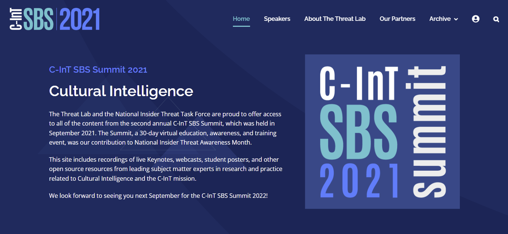
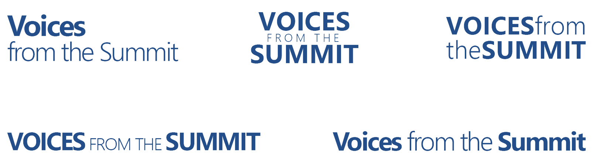
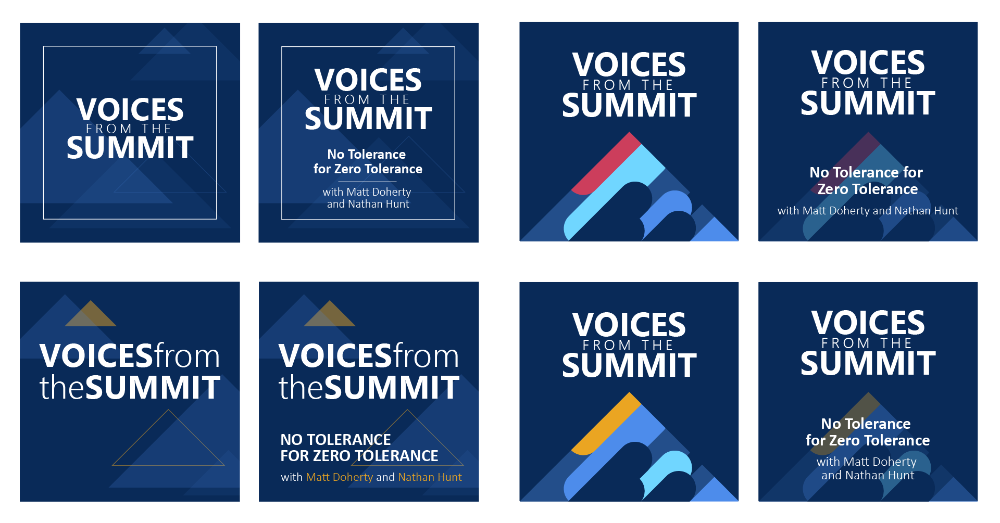
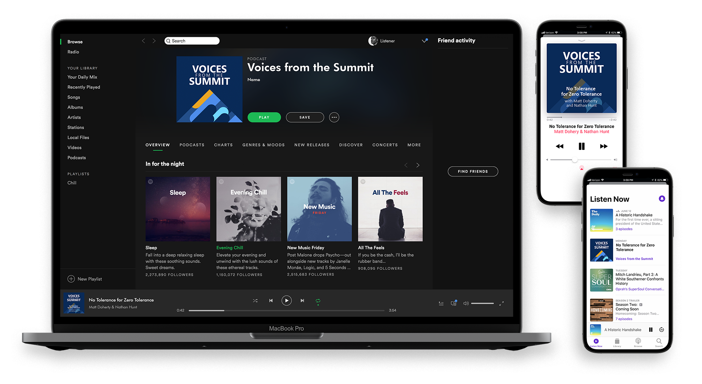

Voices from the SBS Summit
Logo & Cover Design
Voices from the SBS Summit is a monthly podcast brought to you by The Threat Lab, DoD’s Counter-Insider Threat Program, and the National Insider Threat Task Force. This podcast features conversations with Threat Lab team members and presenters from The Threat Lab’s annual Counter-Insider Threat Social and Behavioral Science Summit.
Logo & Cover Design Process
As the podcast is a follow-up companion to the C-InT SBS Summit, the design of the logo and cover art needed to reflect the visual style of the conference. The branding for the podcast was based off of the SBS Summit 2021 website, seen below.
A wide range of logos and covers were designed.
Final Selection
After several rounds of design reviews, it was narrowed down to four contenders.
The final selection was made and mockups created to show proof of concept.
A last minute change to the title was made as well.
Season Two
For the second season of the podcast, it was decided to keep the same design but update the color scheme to match that of the 2022 SBS Summit.
The final design.